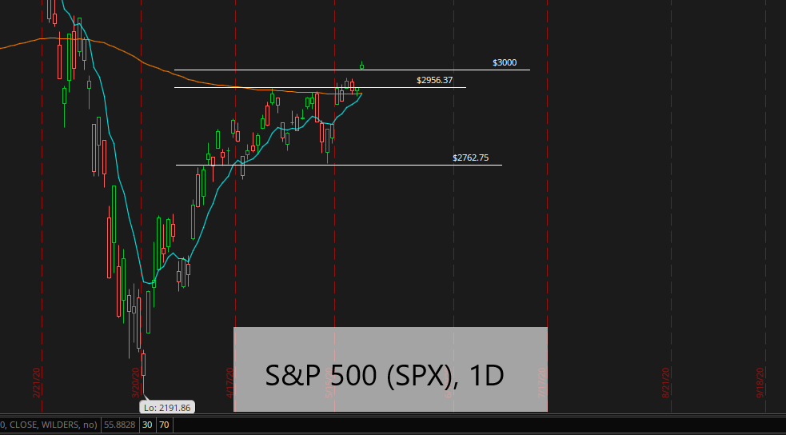
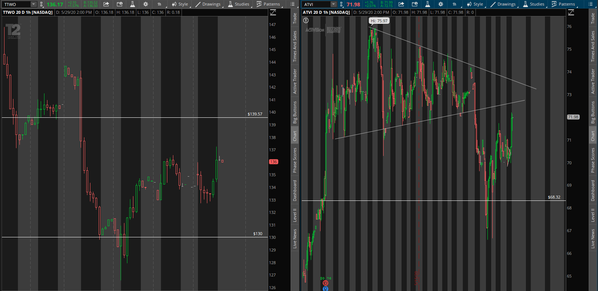
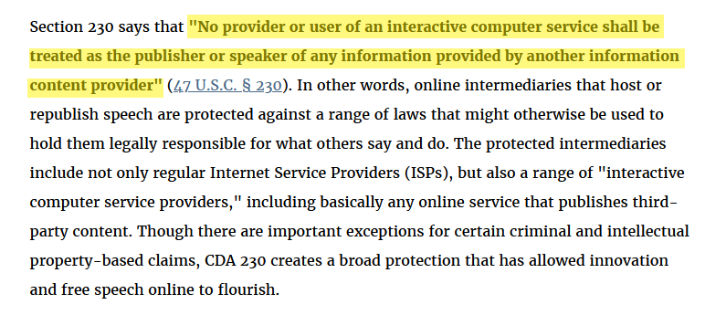

The Bullearish Market and Twump Issues
5/28/2020
Rising S&P
The trading week started off on Tuesday this week, due to Memorial Day, and it was off to a very bullish start as the S&P 500 climbed above 3,000 with continued hopes of a vaccine, the start of human studies for the vaccine, and being closer to a reopening of the economy. 3,000 is also a major level because it’s what’s called a “psychological resistance level.” These psychological support and resistance levels are at prices that are whole, round numbers, such 100, 500, 1,000, 3,000, 5,000, 10,000, etc. Essentially, these psychological levels can either act as major areas of support, or major areas of resistance. When a price breaks above that level (as in this case), there is a lot of potential for a big rally, assuming the price of a given stock, index, ETF, etc., can hold above this old resistance level (turns into new support). This isn’t the only thing that shows very bullish signs of a continued uptrend however, because the S&P also climbed above the 200 EMA. The 200 exponential moving average (EMA) is the average closing price of a security within the last 200 trading sessions, so when a stock goes above or below the 200 EMA, again, assuming it can hold that level, there is a big chance of a move to the upside or downside. In this case, since it broke above the 200 EMA, there is a good possibility for a bigger move up. Buying at these levels though, at least for myself, is quite difficult because of how overvalued a lot of stocks are right now in the market, especially tech stocks, because of a lot of tech companies benefitting from stay-at-home orders due to COVID-19. A good example of this is Facebook, Inc. (NASDAQ: FB), Take-Two Interactive, Inc. (NASDAQ: TTWO), Activision Blizzard, Inc. (NASDAQ: ATVI), Amazon, Inc. (NASDAQ: AMZN), just to name a few. There are very little bargains in the market right now and I’ve been on a quest on finding good undervalued companies, which, according to Warren Buffett, there isn’t very many really good business when you think about it, so finding one that’s undervalued on top of that when we’re having such a rally in the stock market, it’s kind of difficult.

Gaming Gaining Touch Up
Last week, I posted a blog about gaming and the moves it’s been making in recent days with the release of earnings and how much this pandemic is helping their sales for games. I also talked a little bit about whether or not this is even sustainable, to which of course, I don’t think that they will be able to retain every single new player they have at the moment. But the two stocks I talked about, Take- Two Interactive, Inc. (NASDAQ: TTWO) and Activision Blizzard, Inc. (NASDAQ: ATVI), took a very sizable dive to the downside this week of 11.9% and 9.45%, respectively. Although, both have now started to make their way back up to about half way of where they were before their considerably sizable drops. A lot of stock have recently started to decline due to some fears of increased tensions or another trade war with China, which would definitely not be good news considering where our economy is at the moment. The market has been climbing like crazy, but it’s still quite volatile, and our economy isn’t at its strongest point either due to it coming to a near full stop because of the pandemic. That could definitely be a reason for the move down combined with profit taking, people selling because they see others selling, amongst a few other reasons, but it’s difficult to pin point exactly why.

Twump Issues
Shares of Twitter, Inc. (NASDAQ: TWTR) are down towards the end of the week Thurs, 5/28/2020 as Trump goes after social media “censorship” after Twitter chose to put fact checking labels on his tweets about mail-in ballots. For starters this really does show the power that these social media giants have now, that they are willing to fact check the tweets of the president of the United States. Definitely some major balls Jack Dorsey. Never change man, never change. Secondly, Trump is currently trying to “completely change” or remove Section 230, which protects social media companies from being legally responsible for what others say and do, though this Section 230 isn’t specifically for these social media companies, just. If you navigate to eff.org, the Electronic Frontier Foundation says the following about Section 230:
So what this basically does for social media companies, is it keeps them from being held liable for the words and actions of others and getting sued because they’re not the ones writing, editing, reviewing, and publishing these posts, the people who use these services are. I can definitely see how this can be an issue for them and why they would need it to operate because it wouldn’t be too great if Trump said something on Twitter tomorrow that people didn’t like and have Twitter get sued for something they didn’t say, and on top of that not being able to take it down because they’re “interfering” with Trump’s freedom of speech.
Closing Thoughts
Things definitely are getting crazy and it’s very interesting to see where it takes us. When you have COVID-19 death cases at 100,000, another potential trade war with China, millions more losing their jobs when 30 million plus already have, the Twitter and Trump issues (what I call Twump), potential vaccine and a reopening, issues with that reopening, and so much more! But, the S&P is breaking major resistance levels. Man, interesting times and sketchy market conditions. But for now, it’s about putting in the work, finding great companies, and keeping an eye on that portfolio.